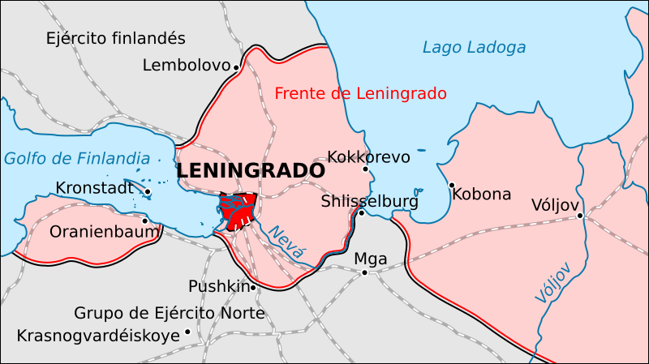

Asedio de Leningrado
El cerco de la ciudad de Leningrado (actual San Petersburgo) durante casi 900 días: uno de los asedios más largos y mortíferos de la historia.
Datos
| Fechas | 8 de septiembre de 1941 – 27 de enero de 1944 (872 días) |
|---|---|
| Lugar | Leningrado (actual San Petersburgo), Unión Soviética |
| Resultado | Victoria soviética; el cerco es finalmente roto |
| Bando sitiador | Alemania (Grupo de Ejércitos Norte) y Finlandia |
| Defensor | Unión Soviética |
| Comandantes | Wilhelm von Leeb, Georg von Küchler (Alemania); Gueorgui Zhúkov, Leonid Góvorov (URSS) |
| Víctimas | Se estima en más de un millón de civiles muertos, sobre todo por hambre |
Bando sitiador
Grupo de Ejércitos Norte
Desde el norte
Defensor
Introducción
Como parte de la Operación Barbarroja, el Grupo de Ejércitos Norte avanzó hacia Leningrado, la segunda ciudad de la URSS y cuna de la Revolución. En septiembre de 1941, las tropas alemanas cortaron las comunicaciones terrestres y comenzaron un asedio destinado a rendir la ciudad por hambre, sin asaltarla.
Razones
- Valor simbólico e industrial: Leningrado era un gran centro industrial y el símbolo del bolchevismo; Hitler quería borrarla del mapa.
- Rendición por hambre: el mando alemán decidió no asaltar la ciudad, sino cercarla y dejar que el hambre y el frío hicieran el trabajo, ahorrando bajas.
- Enlazar con Finlandia: el cerco pretendía unir el frente alemán con el finlandés al norte.
Cuerpo (desarrollo)
Durante el primer invierno (1941-42), el hambre alcanzó niveles atroces: la ración de pan cayó a apenas unos gramos diarios y murieron cientos de miles de civiles. La única vía de suministro era la "Carretera de la Vida", tendida sobre el hielo del lago Ladoga, por la que entraban alimentos y salían evacuados bajo el fuego enemigo.
Pese al hambre, los bombardeos y el frío, la ciudad no se rindió. La industria siguió produciendo armas y la población resistió. En enero de 1943 se abrió un estrecho corredor terrestre, y en enero de 1944 una gran ofensiva soviética levantó definitivamente el asedio.

Mapa del cerco de Leningrado en español (Wikimedia Commons): las líneas del frente en septiembre de 1941 y la ruta de suministro por el lago Ladoga.
Conclusión
Leningrado resistió 872 días, un símbolo mundial de la determinación soviética. El coste humano fue inmenso, pero la ciudad nunca cayó.
- Es uno de los asedios más largos y mortíferos de la historia.
- Inmovilizó durante años a fuerzas alemanas importantes en el norte.
- Tras la guerra, Leningrado recibió el título de "Ciudad Heroica".
Curiosidades
- La Séptima Sinfonía: Dmitri Shostakóvich compuso su Sinfonía n.º 7 "Leningrado", que se interpretó en la ciudad sitiada y se convirtió en símbolo de resistencia.
- La Carretera de la Vida: los camiones cruzaban el lago helado corriendo el riesgo de romper el hielo o ser bombardeados, pero mantuvieron viva la ciudad.
- El banco de semillas: los científicos del instituto Vavílov protegieron una colección única de semillas; algunos murieron de hambre antes que comérselas.
Teorías
Debates e interpretaciones historiográficas, presentados como tales:
- ¿Por qué no se asaltó la ciudad? Se debate si un asalto directo habría sido más eficaz o si el cerco por hambre fue una decisión deliberada de exterminio.
- El papel de Finlandia: se discute hasta qué punto las fuerzas finlandesas participaron activamente en el estrangulamiento de la ciudad o se limitaron a recuperar su territorio.